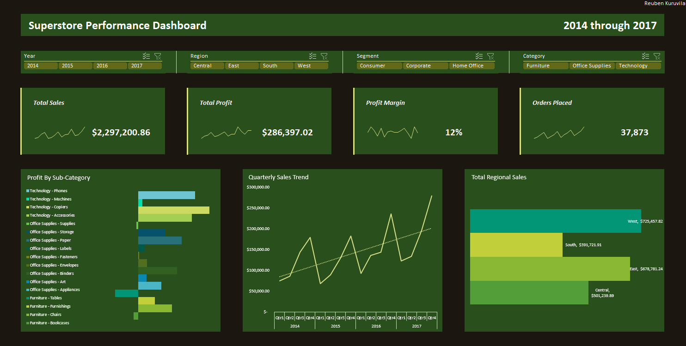

Superstore Sales Analysis
Excel · 2014–2017
The question: Which regions and categories were underperforming, where the business was losing profit margin, and what was driving year-over-year sales trends.
The approach: Built an interactive Excel dashboard with slicers for year, region, segment, and category. KPI cards tracked total sales, total profit, profit margin, and order volume, backed by visuals breaking down profit by sub-category, quarterly sales trends, and regional sales totals.
The takeaway: Tables (furniture) was underperforming across nearly every region — a category-wide problem, not a regional one. The South stood out further: it had the weakest sales overall, and its quarterly trend diverged sharply from the other three regions, pointing to something region-specific worth digging into.